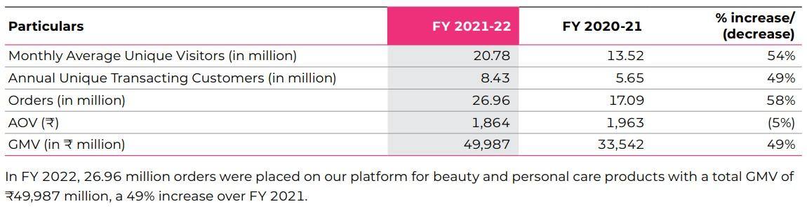
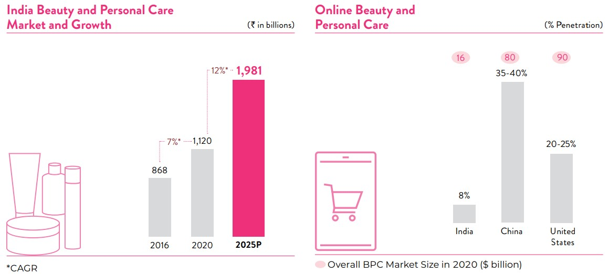
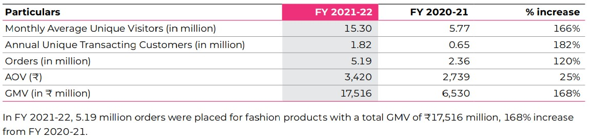
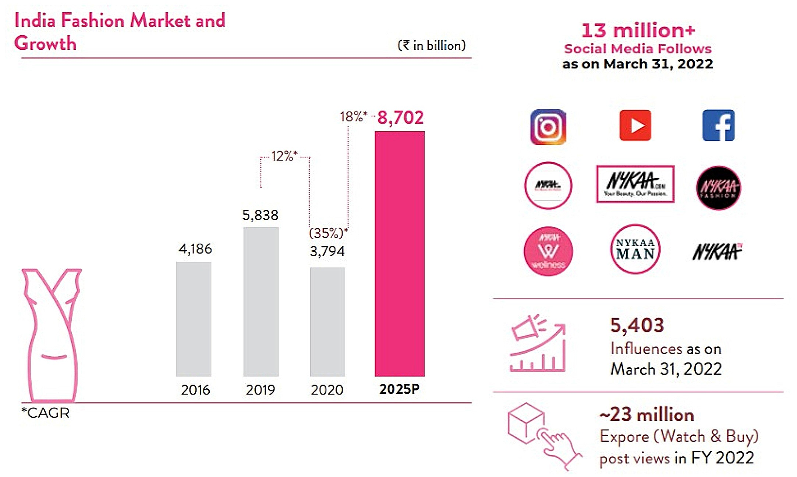
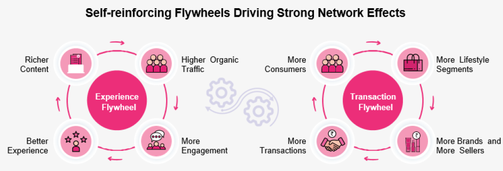
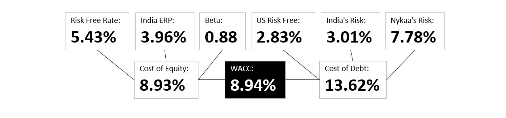
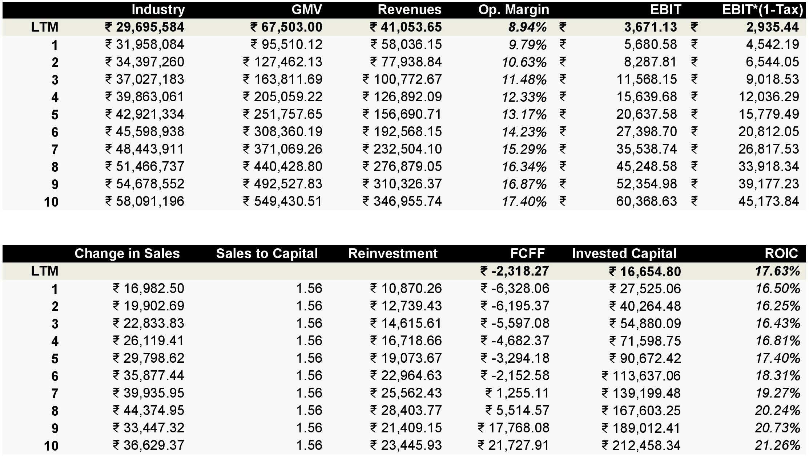
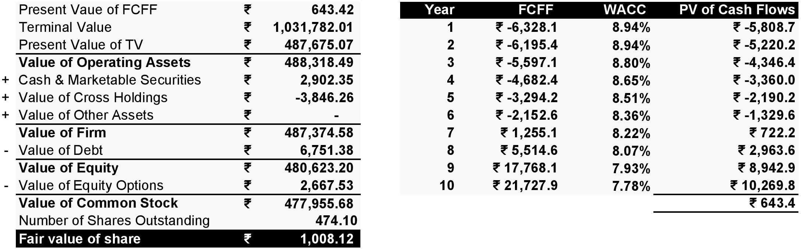

Nykaa - An Ecommerce Makeup Company
Nykaa is a digitally native consumer technology platform, delivering a content-led, lifestyle retail experience to consumers. The company has a diverse portfolio of beauty, personal care, and fashion products, including owned brand products manufactured by it. The problem of counterfeit makeup was a much larger problem back then. Women thought they were paying for authentic product. You’d get swarmed by hawkers selling the Maybelline Colossal Kajal counterfeit and even if you used the original product all these years, you couldn’t recognise any difference in its packaging. This was the same problem in buying things online. Amazon and Flipkart had dodgy sellers for makeup with inconsistent pricing.
Falguni Nayar, the Founder & CEO spotted this problem and started the company in 2012 and invested a couple of million dollars of her own money. Nykaa would buy in bulk from the makeup companies, warehouse it and when the item was sold, do the shipping and fulfilment for the order. In 2012 the company was having 10 orders per day to a 100 orders per day in October 2013. The company in 2014 raised $3.5 Million in Series A, $9.5 Million in Series B in 2015, Rs 100 crores from Harsh Mariwala in 2016 for Series C. Valuation of Nykaa for Series C was 775 Crores. The company had expanded to physical stores by then for increasing brand visibility.
A) Beauty and Personal Care (90% of revenues) - The company offers 296,122 SKUs from 3,118 global and domestic brands primarily across make-up, skincare, haircare, bath and body, fragrance, grooming appliances, personal care, and health and wellness categories as of March 31, 2022. Apart from the tie ups with several suppliers, the company also has its own brands such as "Nykaa Cosmetics", "Nykaa Naturals" and "Kay Beauty". The segment operates based on the "Inventory led model" where the company procures products in bulk and stores them at their warehouse and sells them upon receiving orders from its customers.


B) Fashion Retail (10% of revenues) -The segment was launched in 2018 and now it has 1,553 brands and 4.3 million SKUs with fashion products across five divisions: women, men, kids, tech and home. Within these divisions, we merchandise across several categories, including western wear, Indian wear, lingerie, footwear, bags, jewellery, accessories, athleisure, tech accessories, home decor, bath, bed and kitchen to cater to diverse consumer journeys across our platform. The segment is based on the "Managed Market place" model where the company doesn’t maintain any inventory, instead it receives the order from its customers and redirects them to its vendors and the vendors ship the product to the Customers.


Online vs Offline- As of March 31, 2022, they had cumulative downloads of 72.5 million (47.3 million in BPC and 25.2 million in Fashion verticals) across mobile applications and during FY 2022, 88.9% of our online GMV came through our mobile applications. Talking about Offline, as of March 31, 2022 their offline channel comprises 105 physical stores across 49 cities in India over three different store formats. The physical stores offer a select offering of products as well as a seamless experience across the physical and digital worlds.
Competitive Advantages (Strong Networking) - Major revenues comes from Nykaa's beauty care and personal care products market. However, the supply of the Beauty and Personal Products (BCP) category is very scattered. No brand has more than 1-2% market share in categories as consumer loyalty is very fickle and susceptible to new launches and trends. This gives the retailer an advantage over the brand. Market share plays a major role in Nykaa's valuation. Nykaa is a margin and a sales story. Mostly sales, because the management is focused on sales growth and covering TAM as much as possible without taking on debt. A "Big Market Illusion" can be an argument which can affect valuations.
Nykaa’s biggest moat isn’t its platform or the network of offline stores or even its brand, its something else entirely, something that even its closest competitors do not excel at - content. Nykaa is a content generating machine. Nykaa Network is the company’s social media platform, where users can talk about everything related to beauty and fashion. A quick glance at the platform and you will notice it looks very similar to any other social media platform - except users can directly buy products while navigating the platform. This type of commerce is already huge in China and has transformed the online shopping experience. Taobao Live, is an app by Alibaba, that helps influencers sell products while live streaming. Last year it sold Gross Merchandise Value worth over USD 70 Billion.

The Customers and Pain Points: Nykaa is a discretionary spend, but, if sales are increasing and if one believes the management and also sees their products everywhere in physical stores and/or online, then may be it is not a discretionary spend and part of lifestyle. There is a clear gap in the options available to the target consumer - women, esp. the ones residing in Tier 2 and Tier 3 cities and towns across India. High prevalence of counterfeit goods sold by small stores and unavailability of every single product that a customer may demand, is hurting their growth and diverting the sales to online platforms like Nykaa.
Pricing, Revenues & Profits: Nykaa makes a profit of about Rs 250 to Rs 300 per average order value of Rs 2000, in the Beauty and Personal Products (BPC) Category. Nykaa biggest expenditure is also their biggest asset aka Advertising and Marketing Expense. They made 8.94% Operating Profit Margin in FY22.

Competition: Myntra was the latest to announce its foray into Beauty and Product Category. Then there are startups like Purplle, who have been trying to compete with Nykaa since the beginning. Even though Purplle started before Nykaa, it has lost market share and struggled to keep up with Nykaa’s pace. Though entry of these new players mean increased competition, I believe Nykaa will still be able to protect its market share, thanks to its content moat. Nykaa is more than a platform to its customers today, it’s a platform built on their trust. International Players like L'Oréal, International Flavors and Givaudan can also enter the market.
My Narrative and Valuation
Based on the key pointers and fundamentals, here are some forecasts and judgements that I made to value Nykaa. It can be wrong, it's a forecast overall!
1) The Market Size: The Indian Beauty and Personal Care Market in India was sized at ₹2,073 billion in 2022, after having grown at a CAGR of 8.41% over next 5 years primarily because of increasing urbanisation, a young population and other demographic and socio-economic factors. The Online Beauty and Personal Care Market in India grew at a promising 60% CAGR between 2016 and 2020, reaching ₹91 billion in 2020, representing 8-10% of the Indian Beauty and Personal Care Market. The sector is expected to grow at 35%+ CAGR over the next 5 years. There is substantial headroom for greater penetration in India, in the context of online penetration of more developed markets such as the United States (20-25%) and China (35-40%) in 2020.
The Indian fashion market is expected to be driven by a young population with increasing disposable income. The Fashion market in India is projected to recover strongly and grow at 5.79% CAGR over the next ten years to reach ₹16,652 billion by 2033 (currently ₹8,966 billion in FY22). Apparel is projected to continue driving ~73% of the market in 2025. The online fashion retail sector size was at ₹450 billion in 2020 (based on checkout GMV), growing at 25% CAGR over the past 4 years. This led to online penetration growing 3x in 4 years to 12% in 2020, with relatively higher penetration in the footwear and accessories categories compared to apparel. The sector is expected to grow at 36% CAGR over the next 5 years.

2) The Market Share: Nykaa has 0.24% GMV Market Share of the Indian Beauty Care & Personal Care Market in FY22. Given that, the supply of the Beauty and Personal Products (BCP) category is very scattered. No brand has more than 1-2% market share in categories as consumer loyalty is very fickle and susceptible to new launches and trends. This gives the retailer an advantage over the brand. As of right now, I don't believe they can pull off 5-10% of total BCP Market in next 10 years. I give them 1%. Am I 100% sure? Nobody is! Nykaa has 0.20% GMV Market Share of Indian Fashion Retail Market in FY22. I project that to be 0.80% in the next 10 years.
3) Revenues: Based on the market size and GMV market share, I forecasted the revenues to go from ₹41,053.65 millions to ₹369,141.76 millions in the next 10 years. Nykaa makes about 75% of GMV as revenues in BCP Market and approx 20% of GMV as revenues in Fashio Retail Market. In other words, a Sales CAGR of 23.79% for the next 10 years.
4) Operating Margin: Operating Margins are easy to protect in Beauty and Personal Care products given cosmetics have the highest mark up of any consumer product in the world. This mark up and wiggle room in the margin of its products meant, Nykaa, could experiment and build a company from ground up while not incurring heavy losses. Nykaa has a margin story and I believe they can achieve 75th percentile of their competitors in the market i.e. 17.4% in next 10 years.
5) Reinvestment: Nykaa makes ₹2.46 for every ₹1 of Invested Capital in FY22. However, the 75th percentile of gross industry makes ₹1.56 for every ₹1 of Invested Capital in FY22. Nykaa spent ₹510.84 millions in acquitions like Dot & Key Wellness at 51% stake in FY22. I projected Nykaa to reinvest roughly ₹19,580 million on average for the next 10 years to achieve a Sales CAGR of 23.79% in next 10 years. Nykaa has a reinvestment rate of 178.98% in FY22 which is mostly due to their advertising and marketing expenditure (which I treated as an asset rather than an expense in my valuation).
6) The Cost of Capital: I used CAPM model to find out the Cost of Equity of 8.93% and risk premiums add-ons (country + market + company) to calculate the Cost of Debt of 13.62%. The overall cost of capital (WACC), that I came up with is 8.94% based on capital structure of debt and equity, which is mostly equity.



Based on the narrative I explained above, I came up with a fair value of ₹1,008.12 per share. Nykaa's Stock was trading at ₹1,415.95 per share (August 01, 2022).
Thank you for reading! Check out my valuation by downloading the DCF Nykaa's Analysis below.